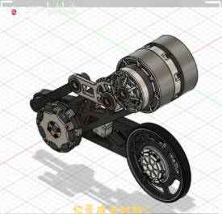
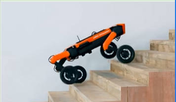
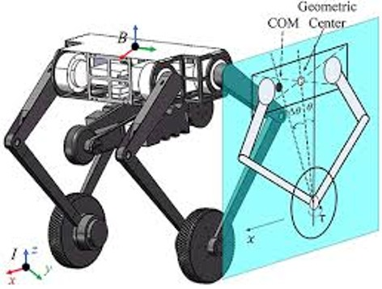
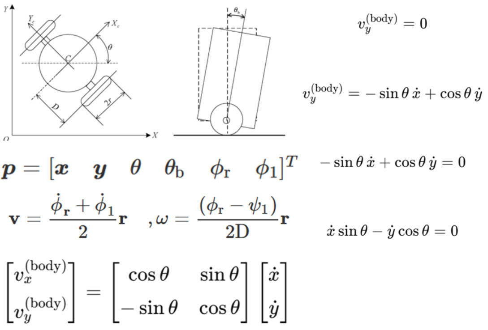
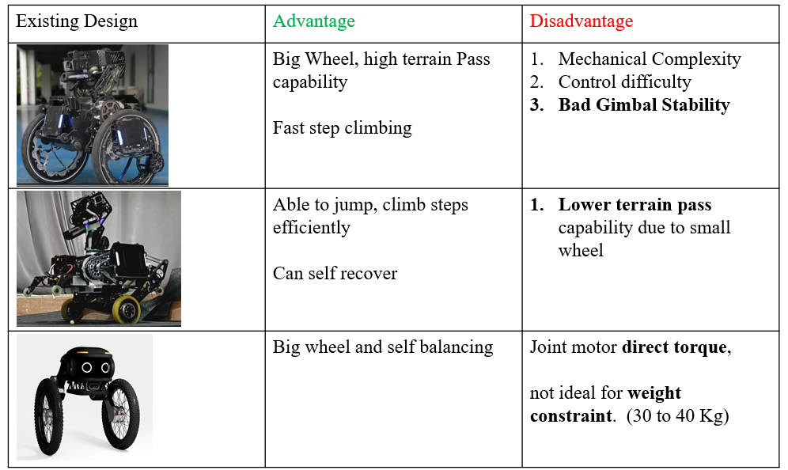

This section documents the overall design thinking process used to arrive
at the final bipedal wheel-leg robot concept. Rather than jumping directly
into a single solution, multiple design directions were explored,
evaluated, and iteratively refined using design specifications, literature
review, morphological charts, and quantitative analysis of key locomotion
concepts.
4.1 Design Specification (Bipedal Wheel Leg Robot)
The design specifications for the bipedal wheel-leg robot are derived
directly from the RoboMaster competition rules and the strategic needs of
the NUS Calibur team. These specifications act as hard design
constraints and ensure that every concept considered remains both
competition legal and practically deployable.
Click to expand: Key design specifications
Specification (For Standard Robot)
Value
Remarks
Initial Size (L × W × H)
600 × 600 × 500 mm
Expansion Size (L × W × H)
800 × 800 × 800 mm
Weight
25 kg Target: Less than 20 kg
Excluding Referee System
Include battery weight
Current Calibur Standard: 18 kg
Speed
Target: 80% of original speed
1.8 m/s
(Target for now before actual simulation)
Current NUS Standard:
1v1 Speed: 1.5–2 m/s
3v3 Level 1 Speed: 0.4–0.5 m/s
Step Climbing Speed
4s (road), 4s (Central Island) Target Speed: within 2 seconds
Mainly focusing on Central Island
Power
Max Capacity: 300 Wh
Max Voltage: 30 V
Supercapacitor
Allowed (≤2000 J nominal, ≤2200 J measured)
Others
Armor Type: 4 × Small Armor Modules
UWB Positioning: Required
Energy Charging Device (gimbal)
Table 1: Standard Robot Key Design Specifications.
4.2 Literature Review of the Past Designs
This subsection reviews relevant climbing and all-terrain robot designs
from both research literature and existing RoboMaster robots. The goal is
to understand the strengths and limitations of different locomotion
strategies—continuous tracks, articulated legs, wheel-leg hybrids, and
transformable wheels—and how they influence step-climbing and terrain
adaptability.
4.2.1 Morphological Chart
To systematically explore the design space, a morphological chart is used
to decompose the robot into key functional blocks (locomotion type, step
strategy, suspension concept, wheel geometry, etc.) and to generate
multiple concept combinations. Each concept is scored against weighted
performance criteria such as flat-ground speed, step-climbing capability,
stability, power consumption, and mechanical complexity.
W denotes the weighting
of each parameter based on its importance.
Choosen Design
Bipedal Leg
Fast reaction · Good open source
Choosen Design
Wheel-Leg
Locomotion: Wheel-Leg Strategy: Lift
Choosen Design
Linkage Climber
Push-up motion Step: 200mm
Track Concept
Raised nose Improved step entry
Track Concept
Long footprint High stability
Explored Design
Track Concept
Angled front Segmented support
Planetary Wheel
Rotating lobes High clearance
Wheel Design
Large radius Simple concept
Planetary Wheel
Custom lobes Edge climbing
Special Concept
Hybrid geometry Step approach
Special 10
Front lift Compact layout
Special 8
Dual joints COM adjustment
Special 3
Compact hybrid Confined spaces

Dual-DOF Leg
Translation + Rotation Non-holonomic

Four-Wheel Stair Climber
Active suspension Stair-climbing test
Move your cursor over any image in the gallery to view a larger version
of the design here, along with a short description and its key morphological
attributes.
Locomotion type, step capability and mechanism details will be shown here.
Parameter Grading
Scores are multiplied by the weighting factor w for ranking.
The above 4 designs are selected for further analysis based on their outstanding morphological scores.
Despite the lower scores of the tracked designs, they are included due to their potential for
high step-climbing capability, it will be further evaluted.
4.3 Design Sense Making – Continuous Track
Figure 8: Continuous Track Configuration.
Tracked locomotion systems are widely used in military and agricultural platforms
because of their excellent terrain adaptability and traction, and their ability to
climb obstacles exceeding twice the roller diameter (Wong, 2001; Liang et al., 2023).
However, their higher internal resistance and lower speed generally make them less
efficient than wheeled systems (Wong & Huang, 2006; Chołodowski & Dudziński, 2021).
Since translational speed is critical in the RoboMaster competition, a preliminary
power–speed analysis is carried out to evaluate whether a tracked configuration
is feasible.
Click to expand: Explanation of calculation and coefficient selection
Steady-state power balance
The robot is designed with a mass of 20 kg and an available
mechanical power of 85 W. The steady-state speed on flat
ground is estimated by balancing drive power and resistive losses. Because it is
difficult to resolve the exact directions of the internal friction forces and
rolling resistance forces, a steady-state conservation of energy
approach is used:
Motor output power = Kinetic power of linear motion + Power losses
Motor input × motor efficiency =
½m v2 +
(rolling resistance + internal track friction + slip + …) × v
Power input: Pin = τ × ω
Frictional force losses are expressed via resistance coefficients multiplied by
the vehicle weight:
Froll = Cr × m g,
Fint = Cint × m g
Rolling resistance coefficient, Cr = 0.03.
Tracked systems typically have more than twice the rolling resistance of pneumatic
tyres. For reference, pneumatic wheelchair tyres on hard surfaces show
Cr ≈ 0.01 at nominal pressure (Łukasz, 2018).
Internal motion resistance coefficient, Cint = 0.12 (design value).
Internal motion resistance on hard ground is dominated by track bending losses
around rollers/idlers, tension/guide and bearing losses, and additional friction
at the track–wheel interface:
Cint = Cbend + Ctens + Cbear,
Fint = Cint × m g.
Scaling of internal losses
To estimate Cint for a 20 kg robot, a combination of
dimensional similitude and empirical data is used:
Reference prototype.
A 2.0 t rubber-track prototype is taken as a clean baseline with
measured internal resistance
Cint,h ≈ 0.09 (midpoint of 0.08–0.10) (SpringerLink).
Bending-loss similitude.
For a rubber belt, bending losses per unit distance scale with flexural rigidity
EI and curvature 1/R:
Cbend ∝ (E × B × t3) / (R2 × m g)
Assuming geometrically similar construction where
E, B, t and R scale with the characteristic length L, and m ∝ L3:
Cbend ∝ L4 / (L2 × L3) = 1 / L.
Downscaling by s = Lr / Lh gives
Cbend,r ≈ Cbend,h × (1 / s).
With s ≈ (mr / mh)1/3 =
(20 / 2000)1/3 ≈ 0.215, the pure similitude factor is
≈ 4.65. This would naively push a bending-dominated coefficient
from 0.09 to ~0.42, which is treated as a conservative upper bound.
Empirical trend for smaller systems.
The same Springer data show 0.14–0.28 for a 720 kg articulated platform
and 0.15–0.21 for a 1.7 t rubber-belt prototype, both higher than heavy
tanks (0.025–0.065). This confirms that internal losses increase as machines
get smaller and more compact. Independent small-robot studies further report total
rolling loss coefficients on hard surfaces exceeding 0.20 (MDPI), indicating that
a Cint in the 0.10–0.18 range is realistic for a 20 kg tracked
robot.
Final coefficients used in design
Internal resistance:
Cint = 0.2 (conservative) with a sanity range of 0.10–0.18,
justified by the 1.7–2.0 t prototypes, the 720 kg platform and
the down-scaling arguments (SpringerLink).
Rolling/interface resistance on hard floor:
Croll = 0.03 (main case), with a range of 0.03–0.12 based on
small-robot measurements on smooth floors (MDPI).
These coefficients are then substituted into the steady-state power equation to
obtain the estimated maximum flat-ground speed for the tracked configuration and
to assess whether it satisfies the RoboMaster competition speed requirements.
%This script is used to calculate the speed reduction after transforming
%from 4 wheeled robot to transformative track locomotive system robot
%Power Input ------------------------------------------
Motor_rated_RPM = 469;
Motor_rated_rad = Motor_rated_RPM * (2*pi/60);
Max_allowable_chassis_power = 100; %w
Motor_transmission_losses_coefficient = 0.15;
Pin_all_motor = Max_allowable_chassis_power * (1 - Motor_transmission_losses_coefficient);
%supercap_J = 2000;
%----------------------------------------------------------
% Vehicle Specification
W = 20 * 9.81; %N
%Losses
%Rolling Losses
C_rolling = 0.03; %(maximum safe estimation) (2 times normal tyre rolling resistence)
F_rolling = C_rolling * W; %N
%Internal Friction
C_internal = 0.20;
F_internal = C_internal * W;
%Slip Losses - Track-ground loss
syms v a b
%Pin_all_motor = (1/2*15)v^2 + (F_rolling+F_internal) * v
a = 1/2*15;
b = F_rolling + F_internal;
c = - Pin_all_motor;
coeffs = [a b c];
v = roots(coeffs);
disp(v);
The final result is the track will have a speed of 1.5m/s with the same motor setting,
which is only 2/3 of the wheeled configuration's speed.
Therefore this configuration is rejected.
4.4 Wheel Leg Holonomic Analysis

Figure 9: Wheel-Leg Configuration.
After eliminating the tracked design,
It is focused on analyzing the wheel-leg,
linkage-leg, and big-wheel concepts,
each of which demonstrates its own distinct
functions and characteristics.
The wheel-leg design introduces an additional
degree of freedom, allowing vertical movement.
This enables the robot to “jump” or lift itself
over obstacles. It also functions as an enhanced
suspension system — the leg actuated by motor torque can
absorb or compensate for vibrations when moving over uneven
terrain.
However, the main limitation of the wheel-leg design is
that it is non-holonomic.
Research into holonomic systems is done to evaluate the
trade offs to use a non-holonomic system.
Click to expand: Overview of wheel-leg mobility analysis
Compared to the mecanum or omni-wheel configurations currently used by the team,
non-holonomic systems lack the ability to move freely in any direction.
In RoboMaster competitions, holonomic mobility offers a significant advantage during confrontations —
it allows the robot to quickly strafe in multiple directions while maintaining the so-called “Beyblade mode”,
where the chassis spins rapidly to evade projectiles.
In contrast, a non-holonomic robot can only rotate on the spot and cannot perform agile lateral
maneuvers, limiting its responsiveness in fast-paced combat situations. Nonetheless, because the
wheel-leg design offers improved terrain adaptability, its motion performance is simulated to
determine whether this trade-off is acceptable for the intended application.

Figure 10: Non-Holonomic Constraint Diagram and Equations.
A holonomic constraint can be written in terms of position only (like
f(xM, yM, θ) = 0), but here the constraint is in
velocity form, involving ẋ, ẏ. It cannot be integrated into
a pure positional constraint — that’s why it’s non-holonomic (Refer to Figure 10), constraints depends on velocity.
So even though the robot has 3 coordinates
(xM, yM, θ), it only has 2 independent velocity
inputs (usually the left and right wheel speeds). That means:
Degrees of freedom (3) − Constraints (1) =
2
the robot is underactuated, and its motion must follow this velocity constraint.
The motion simulation in MATLAB adopts real physical constraints, such as the non-holonomic
kinematic equation of a differential-drive robot, which governs how the robot’s position
(x, y) and orientation θ evolve based on its forward velocity v
and angular velocity ω. In the code, this constraint is reflected in the following
section:
Here, pose_2w(3) represents the robot’s heading angle θ, while
vx2 and vy2 are the velocity components constrained to that heading
direction. This implementation ensures that the robot cannot move sideways (i.e., it obeys the
non-holonomic constraint) and must rotate (omega2) to change its direction of travel
— accurately modeling the real-world motion of a two-wheel differential-drive robot.
And below is the simulation result.
4.5.1 Omniwheel vs 2-Wheel Simulation
Simulation Video: Holonomic vs Non-Holonomic Response
The video below shows the omniwheel robot (holonomic) and the two-wheel
robot (non-holonomic) attempting to track the same zig-zag trajectory.
The omniwheel system can make sharp lateral corrections, whereas the
two-wheel robot exhibits slower, arcing turns due to its kinematic
constraint.
Show MATLAB Code (zigzag_sim.m)
% MATLAB Zig-Zag Simulation (Omni vs 2-Wheel)
% Full script saved as zigzag_sim.m
% Run to generate zigzag_sim.mp4 video
% clc; clear; close all;
%% Simulation parameters
dt = 0.05;
T = 40;
N = T/dt;
%% Initial poses [x, y, theta]
pose_omni = [0; 0; 0];
pose_2w = [0; 0; 0];
%% Trajectories
traj_omni = zeros(N,3);
traj_2w = zeros(N,3);
%% Speeds
v_omni = 0.5;
v2 = 0.5;
omega2_max = 1.0; % max rotation rate for 2-wheel
%% Setup figure
figure('Position',[100 100 800 400]);
hold on; axis equal;
xlabel('X (m)'); ylabel('Y (m)'); grid on;
xlim([-1 10]); ylim([-3 3]);
% Plot handles
h_omni = plot(nan,nan,'b','LineWidth',2);
h_2w = plot(nan,nan,'r','LineWidth',2);
traj_plot_omni = plot(nan,nan,'--b','LineWidth',1.5);
traj_plot_2w = plot(nan,nan,'--r','LineWidth',1.5);
%% Define waypoints for zig-zag (straight-line segments)
waypoints = [0 0;
3 0;
3 2;
6 2;
6 -1.5;
9 -1.5;
9 1;
10 1]; % [x, y]
segment_index = 1;
current_heading = atan2(waypoints(2,2)-waypoints(1,2), waypoints(2,1)-waypoints(1,1));
%% === Video Recording Setup ===
v = VideoWriter('zigzag_sim.mp4','MPEG-4'); % Output video
v.FrameRate = 60; % Frames per second
open(v);
%% Simulation loop
for i = 1:N
%% Omniwheel robot: straight-line motion along current segment
dx = waypoints(segment_index+1,1) - pose_omni(1);
dy = waypoints(segment_index+1,2) - pose_omni(2);
dist = sqrt(dx^2 + dy^2);
% Check if reached end of current segment
if dist < v_omni*dt && segment_index < size(waypoints,1)-1
segment_index = segment_index + 1;
current_heading = atan2(waypoints(segment_index+1,2)-waypoints(segment_index,2), ...
waypoints(segment_index+1,1)-waypoints(segment_index,1));
dx = waypoints(segment_index+1,1) - pose_omni(1);
dy = waypoints(segment_index+1,2) - pose_omni(2);
end
vx_omni = v_omni * cos(current_heading);
vy_omni = v_omni * sin(current_heading);
% Update omniwheel pose
pose_omni(1) = pose_omni(1) + vx_omni*dt;
pose_omni(2) = pose_omni(2) + vy_omni*dt;
pose_omni(3) = current_heading;
traj_omni(i,:) = pose_omni';
%% 2-wheel robot: move toward omniwheel (non-holonomic)
desired_theta = atan2(pose_omni(2) - pose_2w(2), pose_omni(1) - pose_2w(1));
theta_err = atan2(sin(desired_theta - pose_2w(3)), cos(desired_theta - pose_2w(3)));
omega2 = max(min(theta_err, omega2_max), -omega2_max); % limit rotation
% Forward motion along heading
vx2 = v2 * cos(pose_2w(3));
vy2 = v2 * sin(pose_2w(3));
% Update 2-wheel pose (real non-holonomic motion constraint)
pose_2w(1) = pose_2w(1) + vx2*dt;
pose_2w(2) = pose_2w(2) + vy2*dt;
pose_2w(3) = pose_2w(3) + omega2*dt;
traj_2w(i,:) = pose_2w';
%% Update plots
set(h_omni,'XData',pose_omni(1),'YData',pose_omni(2));
set(h_2w,'XData',pose_2w(1),'YData',pose_2w(2));
set(traj_plot_omni,'XData',traj_omni(1:i,1),'YData',traj_omni(1:i,2));
set(traj_plot_2w,'XData',traj_2w(1:i,1),'YData',traj_2w(1:i,2));
drawnow;
% === Capture Frame for Video ===
frame = getframe(gcf);
writeVideo(v, frame);
end
%% Finalize video
close(v);
title('Omniwheel vs 2-Wheel Balancing: Zig-Zag Sharp Turn Comparison');
legend('Omniwheel','2-Wheel','Omni Traj','2W Traj');
4.5 Linkage Design Analysis (Bipedal with Linkage)
Figure 11: Five-Bar Linkage Mechanism.
Many wheel-leg and quadrupedal robots utilize linkage mechanisms to drive leg movement,
as such systems offer a mechanical advantage in transmitting torque and force. This design
choice enhances the robot’s ability to handle loads efficiently while maintaining smoother
motion control. In this case, a brief evaluative analysis is carried out to assess the potential
benefits and feasibility of applying this linkage-based configuration within the project’s context.
Linkage-Based Leg Mechanism Evaluation
Key Functional Considerations
Functionality
Motor Placement
Able to offset the motor on the chassis:
Compact size
Better weight distribution (avoid higher moving mass)
Special Feature
360° Rotation
For self-recovery purposes.
Loading
Mechanical Advantage
From linkage, providing torque step-up.
Terrain Pass
Additional mode of climbing steps
Leg on one side only
Five-Bar Scissor Linkage Selection
Among the various linkage configurations explored, the five-bar scissor linkage stands
out as particularly noteworthy. This design offers several advantages:
Greater flexibility in achieving mechanical advantage (2–3× torque amplification).
Full 360° rotation capability.
Ability to integrate a nitrogen spring for additional lift or jumping capability.
A simple 3D-printed prototype is produced to validate the concept of such linkage movement.
4.6 Big Wheel Design Analysis
Figure 12: Big Wheel Robot Configuration.
A big-wheel concept is also evaluated, where the robot attempts to clear
the step primarily through a large effective wheel radius and controlled
“hopping” or rolling motion onto the riser. This configuration
is ideal for uneven ground or outdoor environment due to its robust wheel structure and
terrain pass capability.
This approach is attractive
because it can simplify the mechanism, but it places strict requirements on
wheel size, centre-of-mass position, and available motor power.
A simple evaluation of the "roll up" mechanism and obstacle clearance capability is done:
Click to expand: Step-climbing and hopping feasibility
Figure 13: Big Wheel Step-Climbing Force Diagram
When a big wheel attempts to climb a vertical step, the wheel typically
contacts the step edge at a single point. The forces at this contact can be
decomposed into a normal force and a friction force, which
are then resolved into the world-frame x and y directions.
The force balance equations are: (Refers to Figure 13 (Top))
Where:
Nw: normal reaction force at the step corner
ff: friction force along the tangent direction
δ: contact angle between the normal vector and global x-axis
fx: horizontal axle reaction from chassis
N: ground normal force (if lower floor contact exists)
mw: effective wheel mass
ax, ay: horizontal & vertical accelerations
g: gravitational acceleration
Horizontal Force Balance
The term Nwcosδ − ffsinδ is the horizontal push
from the step edge. For the wheel to climb, this push must be strong enough to overcome
the axle reaction fx and produce forward acceleration
ax.
Vertical Force Balance
The vertical term Nwsinδ + ffcosδ determines whether the
wheel can lift upward. The wheel climbs successfully only if:
If friction is too small (ff ≤ μNw) or the vertical component
is insufficient, the wheel will slip or stall instead of climbing the obstacle.
These equations are therefore used to determine whether a big-wheel design can
generate enough torque and reaction forces to lift the wheel centre over a
given step height.
From the evaluation, it is evident that a larger wheel makes it significantly easier to roll over
an obstacle, as it increases the contact angle δ and reduces the effective climbing resistance.
4.7 Design Analysis Summary
The analyses in Sections 4.4–4.7 are summarised by comparing each concept
against the weighted design criteria. The following 3 design are choosen to be incorporated into the main design
Click to expand: Shortlisted concept rationale

Table 2: Shortlisted Design Concepts Comparison.
The three designs highlighted in the comparison table were selected as the
most relevant and high-performing locomotion concepts for step-climbing and
terrain negotiation. Each represents a different approach to achieving
vertical mobility while maintaining competition-relevant speed,
manoeuvrability, and stability.
Design 1 — Wheel-Leg Robot:
This platform demonstrates efficient jumping, fast step-climbing, and
reliable self-recovery. Its dynamic leg actuation provides strong terrain
adaptability and introduces the concept of using the wheel-leg as both a
propulsion and suspension module. Its main limitation lies in limited terrain
pass capability when using a smaller wheel diameter.
Design 2 — Wheel-Leg with Linkage Mechanism:
This system extends the wheel-leg concept by integrating a multi-bar linkage,
enabling torque amplification, mechanical advantage tuning,
and full 360° rotation for self-recovery. The enhanced leg
articulation allows controlled lifting motions and efficient step
negotiation. Although mechanically more complex, its functional flexibility
makes it a strong candidate for integration.
Design 3 — Big-Wheel Robot:
The large wheel radius provides excellent terrain-pass capability, allowing
the robot to roll over obstacles with reduced geometric constraints. This
design offers simple, passive step-engagement behaviour and high ground
clearance. Its main drawback is the added weight from the big wheel.
Together, these three designs form the basis of the final bipedal
wheel-leg concept. Their strengths—dynamic jumping and recovery (Design 1),
torque-amplified linkage motion with full rotation (Design 2), and high
terrain clearance from big-wheel geometry (Design 3)—are selectively combined
to produce a hybrid mechanism capable of reliable 200 mm step-climbing
while maintaining the mobility and stability required for RoboMaster
competition conditions.
This initial concept provides the foundation for the detailed CAD design,
structural validation, and prototyping described in
Section 5: Finalised Main Design Concept Validation and Prototyping.